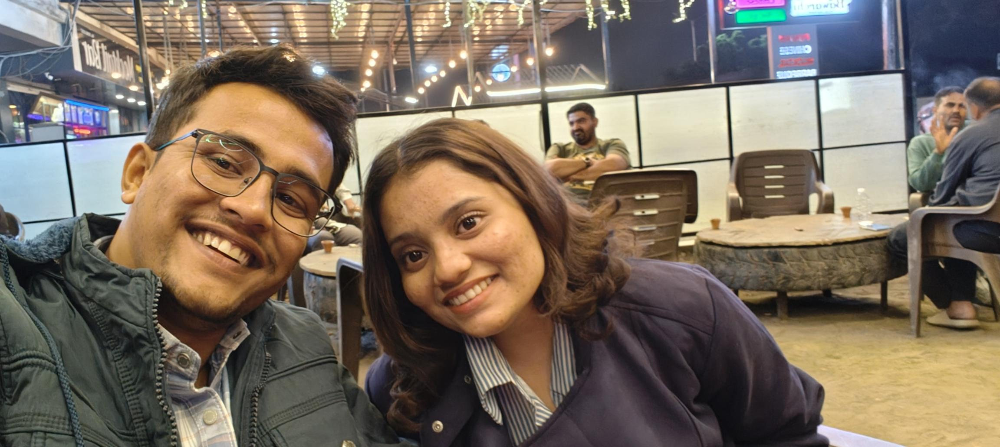
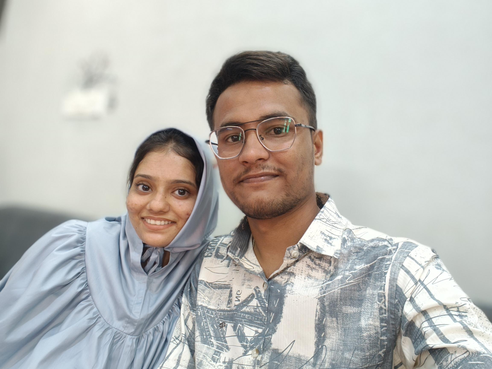

How It All Started
Looking back, it is almost funny how one regular day completely changed the course of everything.I Still remember talking to you and how I thought how can someone be soo Perfect and that was the day when I realized I finally found the One.
Greenland and Stunning Views
What an awesome Day that was, We went to greenland and how Beautifully you were looking that Day. With you even a small path feels like an absolute journey to heavens
Chai & Joyfulness
Watching Movies with you is joyous moment in my Life even a shit ass movies becomes a Blockbuster because I am in the same Space as you are.This was our First Movie together and I still remember how gorgeous and stunning you looked

First Restaurant
If you remember we did first Twining and Recorded crazy videos in Marich. How Shy you were when you suggested the Restaurant you looked soo cute. You Know People Still Say this Day there was an Angel in Marich My Princess.
Building Forever
From that very first day that we became offical to right now, every single memory is a core memeory in the foundation of us. I wouldn't trade a single second, a single laugh, or a single talk everything about us is special...!!!!!!l
